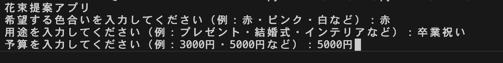
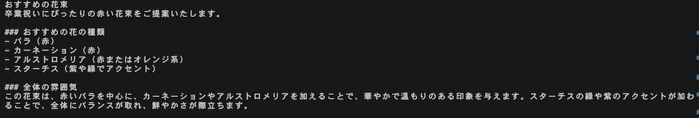
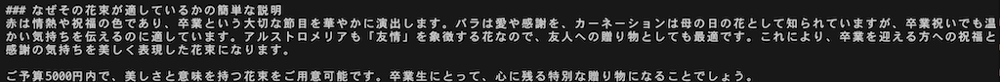

花束を提案してくれるアプリ
ソースコード
from openai import OpenAI
#APIを使うkeyを入力します。これは絶対にwebページなどで公開してはいけません。
client = OpenAI()
print("花束提案アプリ")
# 入力
color = input("希望する色合いを入力してください（例：赤・ピンク・白など）：")
use = input("用途を入力してください（例：プレゼント・結婚式・インテリアなど）：")
budget = input("予算を入力してください（例：3000円・5000円など）：")
# 質問文
question = f"""
あなたはフラワーショップのプロのスタッフです。
以下の条件に合った花束を1つ提案してください。
・色合い：{color}
・用途：{use}
・予算：{budget}
提案内容には次を含めてください。
・おすすめの花の種類
・全体の雰囲気
・なぜその花束が適しているかの簡単な説明
"""
response = client.chat.completions.create(
model="gpt-4o-mini",
messages=[
{"role": "user", "content": question}
]
)
# 出力
print("おすすめの花束")
print(response.choices[0].message.content)
実践
⭐️入力

⭐️出力

